3 重要な処理
3.1 線形補間デモザイク
3.1.1 簡易デモザイク処理の問題点
簡易デモザイク処理を使ったRAW現像
raw_array <- raw$raw_image
white_level <- 1024
wb_raw <- raw_array %>%
black_level_correction(raw$black_level_per_channel, raw$raw_pattern) %>%
white_balance(raw$camera_whitebalance, raw$raw_colors)
dms_img <- wb_raw %>%
simple_demosaic %>%
`/`(white_level)
gmm_img <- gamma_correction(dms_img, 2.2)表示
gmm_img %>% ta %>% as.cimg %>% plot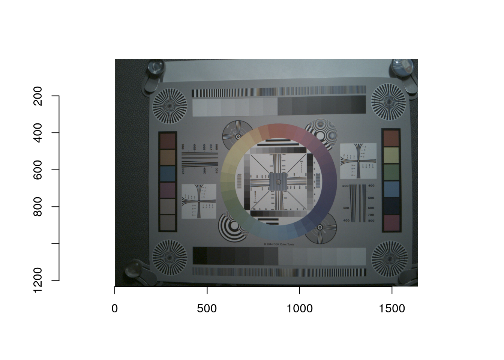
現像後のサイズ
dim(gmm_img) %>% head(2)## [1] 1232 1640RAWデータのサイズ
dim(raw_array)## [1] 2464 3280JPEG画像の読み込み
jpg_img <- imager::load.image(raw_file)拡大して比較
x1 <- 836
y1 <- 741
dx1 <- 100
dy1 <- 100
par(mfrow = c(1, 2))
gmm_img %>% ta %>% as.cimg %>%
imsub(x %inr% c(x1, x1 + dx1), y %inr% c(y1, y1 + dy1)) %>%
plot(interpolate = FALSE, main = "簡易デモザイク結果")
jpg_img %>%
imsub(x %inr% (c(x1, x1 + dx1) * 2), y %inr% (c(y1, y1 + dy1) * 2)) %>%
plot(interpolate = FALSE, main = "JPEG画像")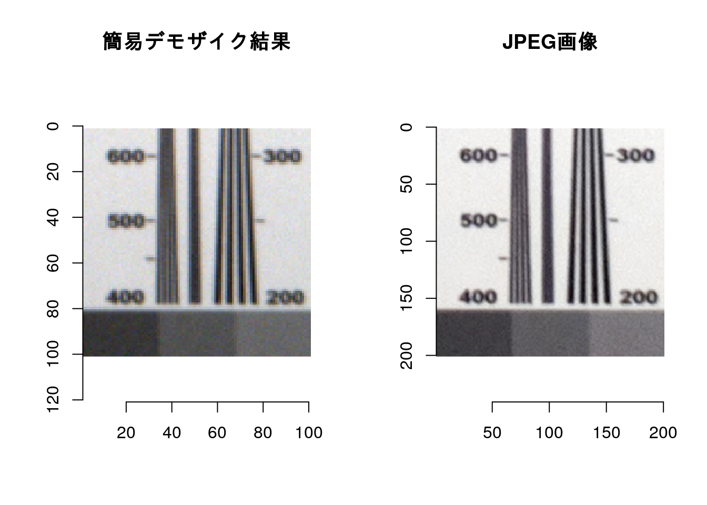
3.1.2 線形補完法
線形補間デモザイク
demosaic <- function(raw_array, raw_colors, pattern) {
dms_img <- array(0, c(dim(raw_array), 1, 3))
g <- raw_array
g[raw_colors %in% c(0, 2)] <- 0
g_filter <- array(c(0, 1, 0,
1, 4, 1,
0, 1, 0) / 4,
c(3, 3, 1, 1))
G(dms_img) <- convolve(as.cimg(g), g_filter)
r <- raw_array
r[raw_colors != 0] <- 0
r_filter <- array(c(1/4, 1/2, 1/4,
1/2, 1, 1/2,
1/4, 1/2, 1/4),
c(3, 3, 1, 1))
R(dms_img) <- convolve(as.cimg(r), r_filter)
b <- raw_array
b[raw_colors != 2] <- 0
# 青のフィルターは赤と共通
B(dms_img) <- convolve(as.cimg(b), r_filter)
dms_img
}デモザイク処理
dms_full_img <- wb_raw %>%
demosaic(raw$raw_colors, raw$raw_pattern)サイズを確認
dms_full_img %>% dim %>% head(2)## [1] 2464 3280ガンマ補正処理
gmm_full_img <- gamma_correction(dms_full_img / white_level, 2.2)比較
par(mfrow = c(1, 2))
gmm_img %>% ta %>% as.cimg %>%
imsub(x %inr% c(x1, x1 + dx1), y %inr% c(y1, y1 + dy1)) %>%
plot(interpolate = FALSE, main = "簡易デモザイク")
gmm_full_img %>% ta %>% as.cimg %>%
imsub(x %inr% (c(x1, x1 + dx1) * 2), y %inr% (c(y1, y1 + dy1) * 2)) %>%
plot(interpolate = FALSE, main = "線形補間デモザイク")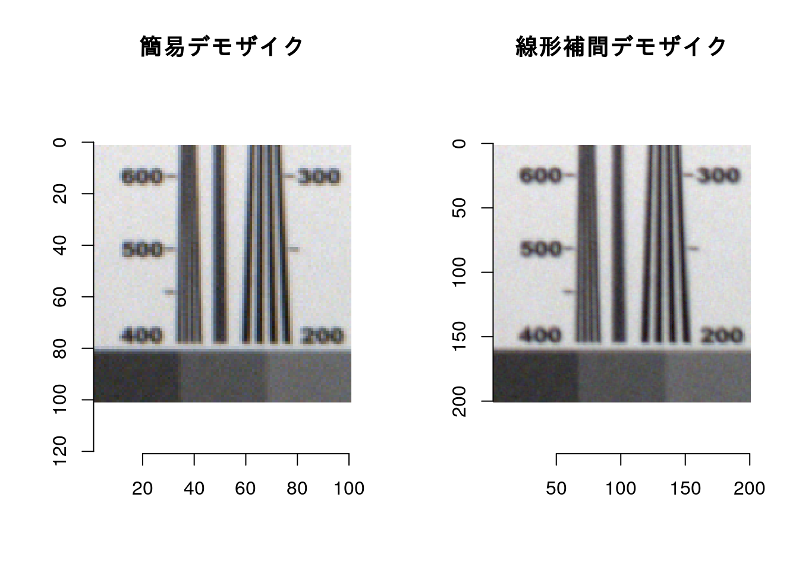
3.2 欠陥画素補正
TODO
3.3 カラーマトリクス補正
カラーマトリクス (CCM: Color Correction Matrix)
color_matrix <- matrix(c(6022, -2314, 394,
-936, 4728, 310,
300, -4324, 8126),
3, 3, byrow = TRUE) / 4096カラーマトリクス補正処理
color_correction_matrix <- function(rgb_array, color_matrix) {
ccm_img <- array(0, dim(rgb_array))
for (col in 1:3) {
ccm_img[,, 1, col] <-
color_matrix[col, 1] * R(rgb_array) +
color_matrix[col, 2] * G(rgb_array) +
color_matrix[col, 3] * B(rgb_array)
}
ccm_img
}比較
par(mfrow = c(1, 2))
gmm_full_img %>% ta %>% as.cimg %>%
plot(main = "CCM補正なし")
dms_full_img %>%
color_correction_matrix(color_matrix) %>%
`/`(white_level) %>%
gamma_correction(2.2) %>%
ta %>% as.cimg %>% plot(main = "CCM補正あり")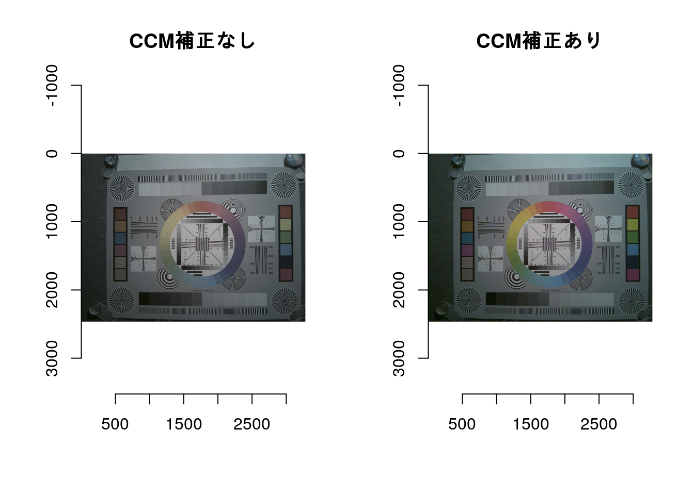
3.4 シェーディング補正
3.4.1 レンズシェーディングの確認
RAW画像の読み込み
raw_file <- "flat.jpg"
raw <- rawpy$imread(raw_file)
raw_array <- raw$raw_imageRAW現像処理
blc_raw <- raw_array %>%
black_level_correction(raw$black_level_per_channel, raw$raw_pattern)
original_img <- blc_raw %>%
white_balance(raw$camera_whitebalance, raw$raw_colors) %>%
demosaic(raw$raw_colors, raw$raw_pattern) %>%
color_correction_matrix(color_matrix) %>%
`/`(white_level) %>%
gamma_correction(2.2)画像表示
original_img %>% ta %>% as.cimg %>% plot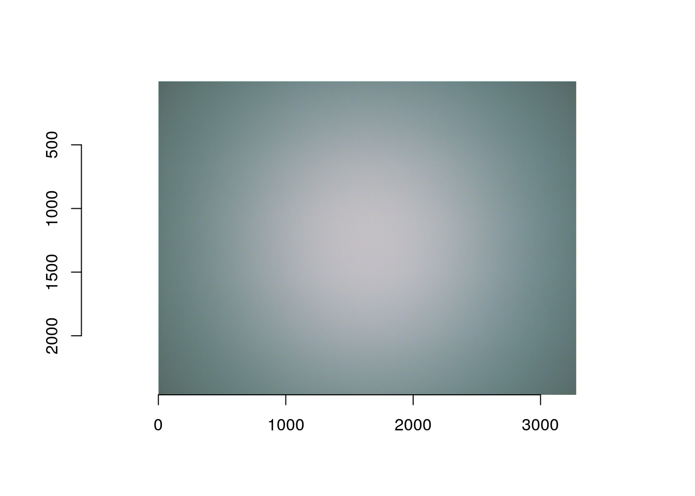
明るさの横方向の変化
library(tidyverse)
w <- ncol(raw_array)
h <- nrow(raw_array)
center_y <- h / 2
center_x <- w / 2
y <- center_y - 16
horizontal_shading_profile <- function(img, w, y) {
seq(1, w - 32, 32) %>%
map_dfr(function(x) list(r = mean(img[y:(y + 32), x:(x + 32), 1, 1]),
g = mean(img[y:(y + 32), x:(x + 32), 1, 2]),
b = mean(img[y:(y + 32), x:(x + 32), 1, 3]))) %>%
map_dfr(~ . / max(.)) %>%
mutate(pos = 1:n())
}shading_profile <- horizontal_shading_profile(original_img, w, y)
ggplot(gather(shading_profile, "color", "value", -pos), aes(x = pos, y = value)) +
geom_line(aes(color = color)) +
ylim(0, 1) +
scale_color_manual(values = c(r = "red", g = "green", b = "blue"))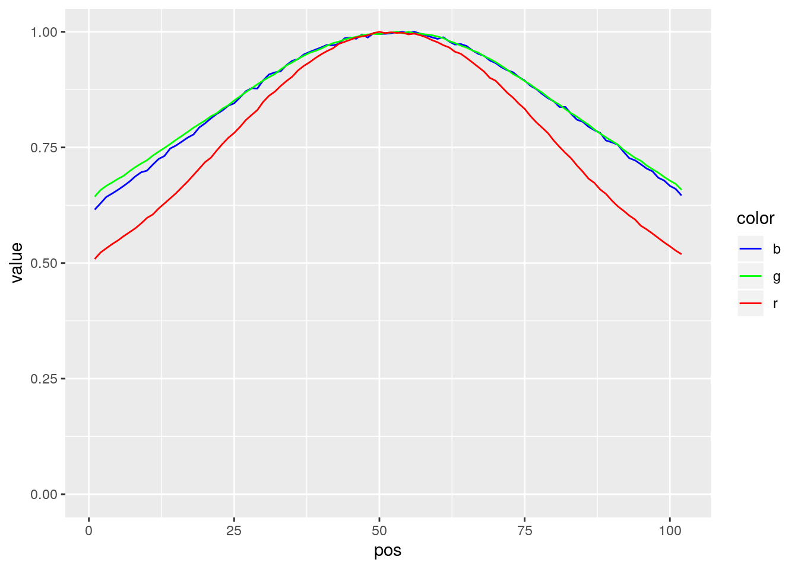
3.4.2 レンズシェーディングのモデル化
value_df <- map_dfr(seq(1, h - 32, 32), function(y) {
map_dfr(seq(1, w - 32, 32), function(x) {
xx <- x + 16
yy <- y + 16
list(
xx = xx,
yy = yy,
radial = (yy - center_y) * (yy - center_y) + (xx - center_x) * (xx - center_x),
b = mean(blc_raw[seq(y, y + 32, 2), seq(x, x + 32, 2)]),
g1 = mean(blc_raw[seq(y, y + 32, 2), seq(x + 1, x + 32, 2)]),
g2 = mean(blc_raw[seq(y + 1, y + 32, 2), seq(x, x + 32, 2)]),
r = mean(blc_raw[seq(y + 1, y + 32, 2), seq(x + 1, x + 32, 2)]))
})
})最大値でノーマライズしてグラフにして確認
norm_value_df <- value_df %>%
transmute(radial,
b = b / max(b),
g1 = g1 / max(g1),
g2 = g2 / max(g2),
r = r / max(r))
colors <- c(r = "red", g1 = "green", g2 = "green", b = "blue")
ggplot(gather(norm_value_df, "color", "value", -radial), aes(x = radial, y = value)) +
geom_point(aes(color = color)) +
ylim(0, 1) +
scale_color_manual(values = colors)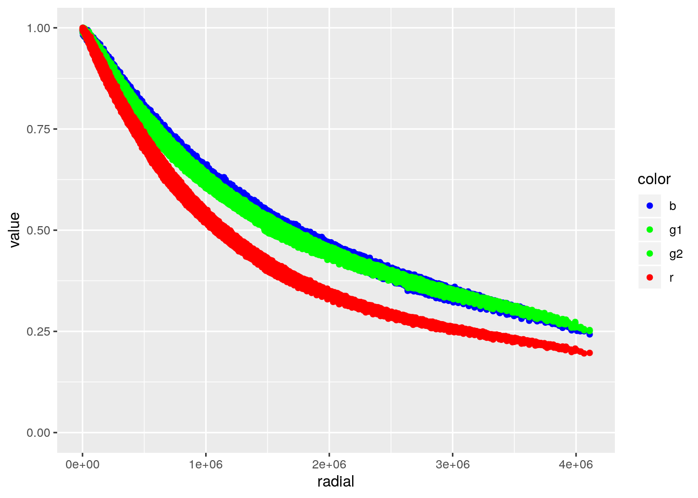
逆数のグラフ
inv_norm_value_df <- norm_value_df %>%
select(-radial) %>%
map_dfc(~ 1 / .) %>%
add_column(radial = norm_value_df$radial, .before = TRUE)
ggplot(gather(inv_norm_value_df, "color", "value", -radial), aes(x = radial, y = value)) +
geom_point(aes(color = color)) +
scale_color_manual(values = colors)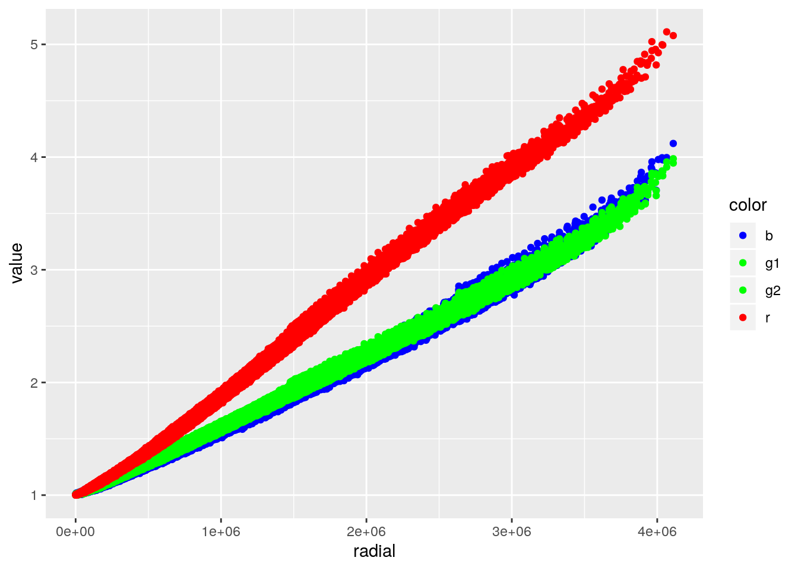
1次式で近似
models <- colnames(inv_norm_value_df)[-1] %>%
paste("~ radial") %>%
map(~ lm(as.formula(.), inv_norm_value_df))
model_df <- models %>%
map_dfr(~ as.list(.$coefficients)) %>%
transmute(color = colnames(inv_norm_value_df)[-1], intercept = `(Intercept)`, slope = radial)値を確認
model_df## # A tibble: 4 x 3
## color intercept slope
## <chr> <dbl> <dbl>
## 1 b 0.939 0.000000655
## 2 g1 0.962 0.000000653
## 3 g2 0.964 0.000000648
## 4 r 0.909 0.00000100プロット
ggplot(model_df) +
geom_abline(aes(intercept = intercept, slope = slope, color = color)) +
xlim(0, 4e6) +
ylim(0, 6) +
scale_color_manual(values = colors)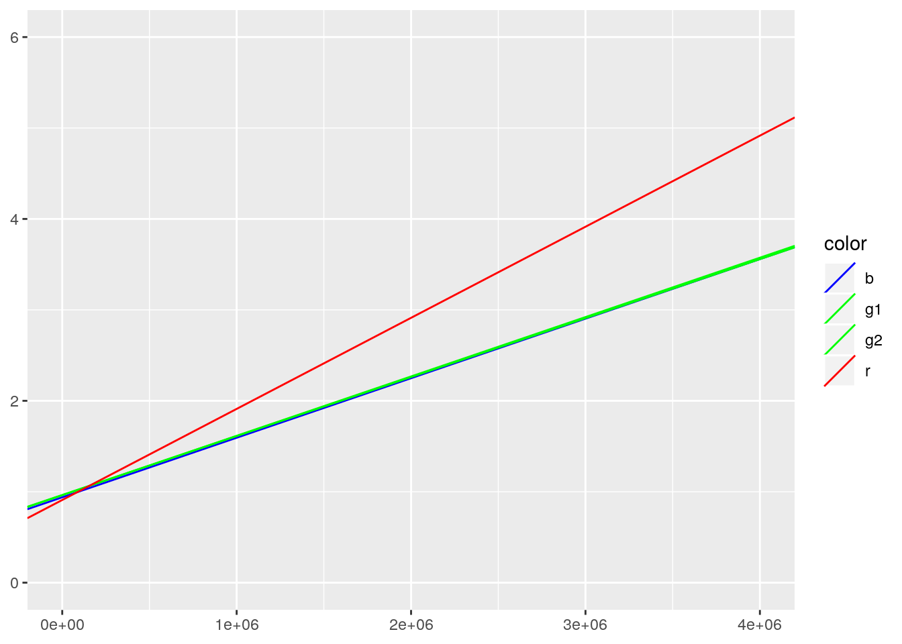
3.4.3 レンズシェーディング補正
レンズシェーディング補正前 (ブラックレベル補正のみ)
blc_raw %>% t %>% as.cimg %>% plot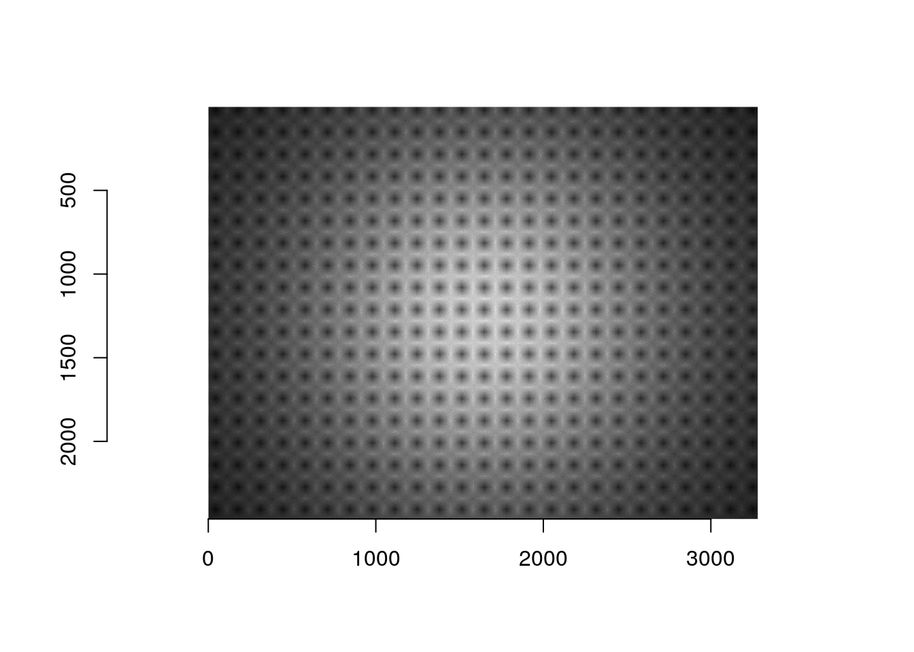
各画素に掛け合わせるゲインを計算
gain_map <- array(0, dim(raw_array))
for (y in seq(1, h, 2)) {
for (x in seq(1, w, 2)) {
r2 <- (y - center_y) ^ 2 + (x - center_x) ^ 2
gain <- model_df$intercept + model_df$slope * r2
gain_map[y, x] <- gain[1]
gain_map[y, x + 1] <- gain[2]
gain_map[y + 1, x] <- gain[3]
gain_map[y + 1, x + 1] <- gain[4]
}
}ゲインをブラックレベル補正した画像に掛け合わせる
lsc_raw <- blc_raw * gain_maplsc_raw %>% normalize %>% t %>% as.cimg %>% plot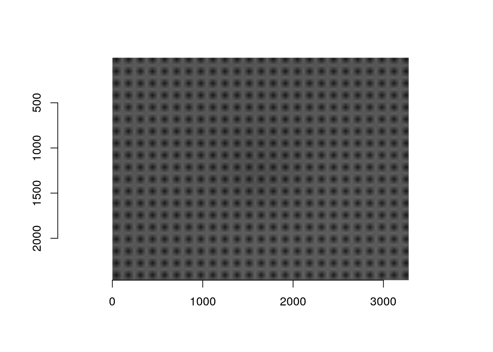
レンズシェーディング補正後のフルカラー画像
shading_img <- lsc_raw %>%
white_balance(raw$camera_whitebalance, raw$raw_colors) %>%
demosaic(raw$raw_colors, raw$raw_pattern) %>%
color_correction_matrix(color_matrix) %>%
`/`(white_level) %>%
gamma_correction(2.2)
shading_img %>% ta %>% as.cimg %>% plot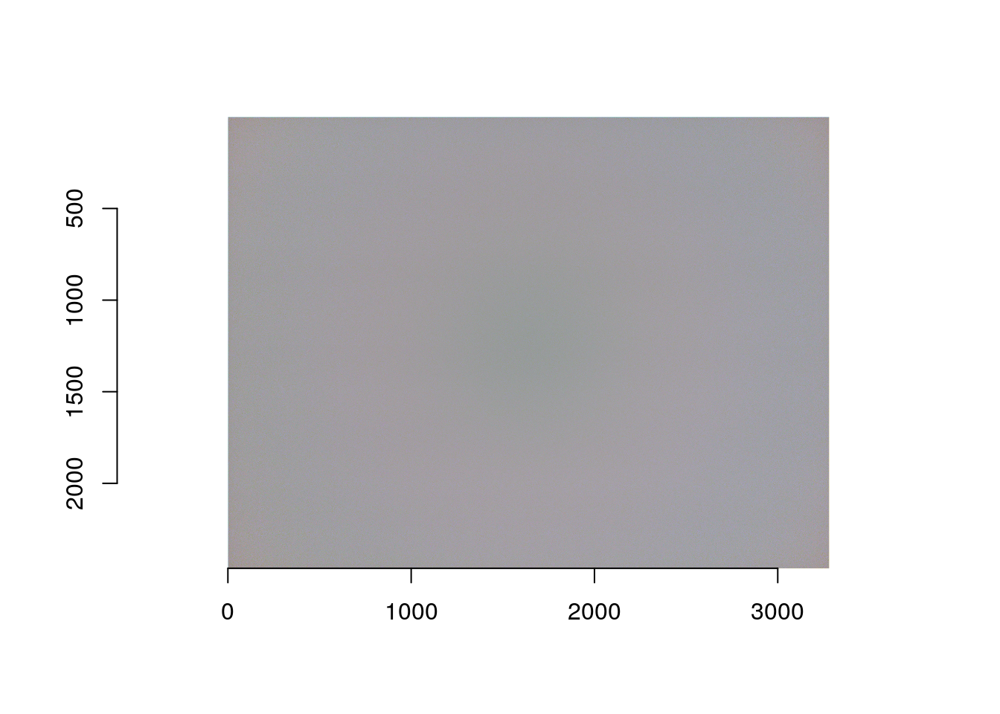
残っているシェーディング量を測定
shading_after <- horizontal_shading_profile(shading_img, w, center_y - 16)
ggplot(gather(shading_after, "color", "value", -pos), aes(x = pos, y = value)) +
geom_line(aes(color = color)) +
ylim(0, 1) +
scale_color_manual(values = c(r = "red", g = "green", b = "blue"))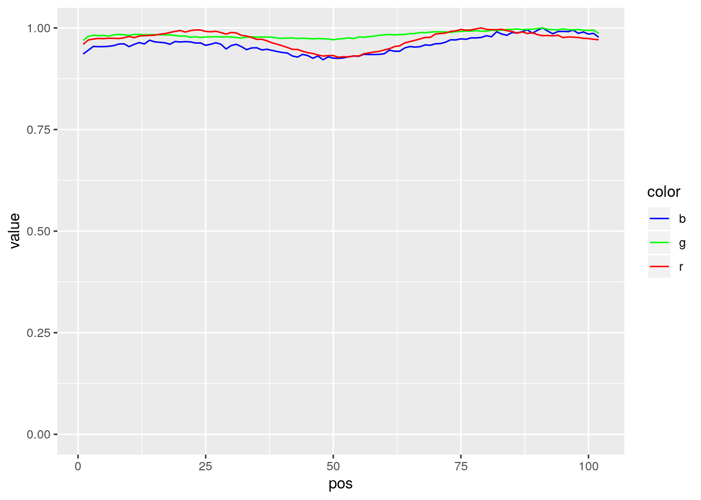
3.4.4 通常画像への適用
raw_file <- "chart.jpg"
raw <- rawpy$imread(raw_file)
raw_array <- raw$raw_image
blc_raw <- raw_array %>%
black_level_correction(raw$black_level_per_channel, raw$raw_pattern)レンズシェーディング補正なし
no_shading_img <- blc_raw %>%
white_balance(raw$camera_whitebalance, raw$raw_colors) %>%
demosaic(raw$raw_colors, raw$raw_pattern) %>%
color_correction_matrix(color_matrix) %>%
`/`(white_level) %>%
gamma_correction(2.2)レンズシェーディング補正あり
shading_img <- blc_raw %>%
`*`(gain_map) %>%
white_balance(raw$camera_whitebalance, raw$raw_colors) %>%
demosaic(raw$raw_colors, raw$raw_pattern) %>%
color_correction_matrix(color_matrix) %>%
`/`(white_level) %>%
gamma_correction(2.2)比較
par(mfrow = c(1, 2))
no_shading_img %>% ta %>% as.cimg %>% plot(main = "レンズシェーディング補正なし")
shading_img %>% ta %>% as.cimg %>% plot(main = "レンズシェーディング補正あり")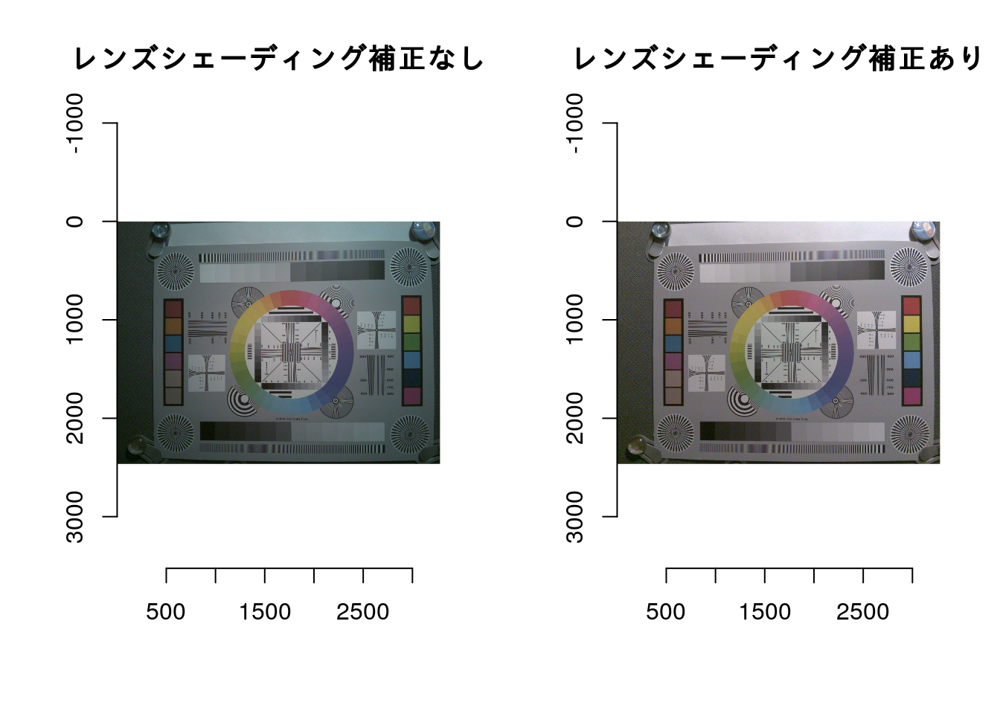
良さそうなので補正処理を関数にする
lens_shading_correction <- function(raw_array, coef) {
gain_map <- array(0, dim(raw_array))
h <- nrow(raw_array)
w <- ncol(raw_array)
center_y <- h / 2
center_x <- w / 2
x <- 1:w - center_x
y <- 1:h - center_y
r2 <- matrix(y, h, w, byrow = FALSE) ^ 2 + matrix(x, h, w, byrow = TRUE) ^ 2
gain_map[c(T, F), c(T, F)] <- r2[c(T, F), c(T, F)] * coef[1,]$slope + coef[1,]$intercept
gain_map[c(T, F), c(F, T)] <- r2[c(T, F), c(F, T)] * coef[2,]$slope + coef[2,]$intercept
gain_map[c(F, T), c(T, F)] <- r2[c(F, T), c(T, F)] * coef[3,]$slope + coef[3,]$intercept
gain_map[c(F, T), c(F, T)] <- r2[c(F, T), c(F, T)] * coef[4,]$slope + coef[4,]$intercept
raw_array * gain_map
}確認
coef <- model_df %>% select(-color)
shading_img2 <- blc_raw %>%
lens_shading_correction(coef) %>%
white_balance(raw$camera_whitebalance, raw$raw_colors) %>%
demosaic(raw$raw_colors, raw$raw_pattern) %>%
color_correction_matrix(color_matrix) %>%
`/`(white_level) %>%
gamma_correction(2.2)
shading_img2 %>% ta %>% as.cimg %>% plot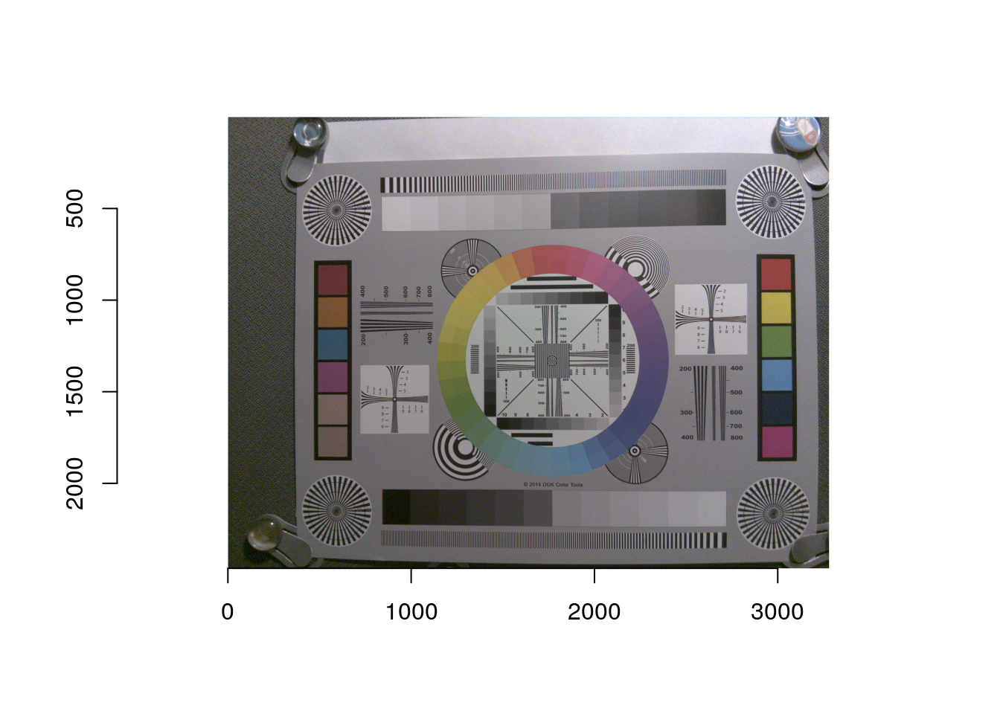